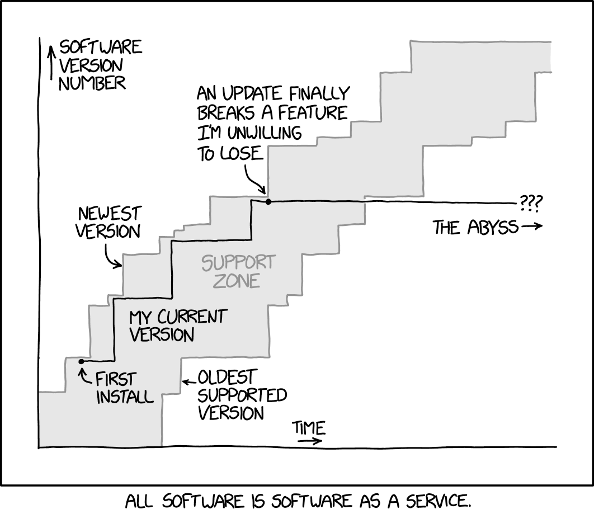
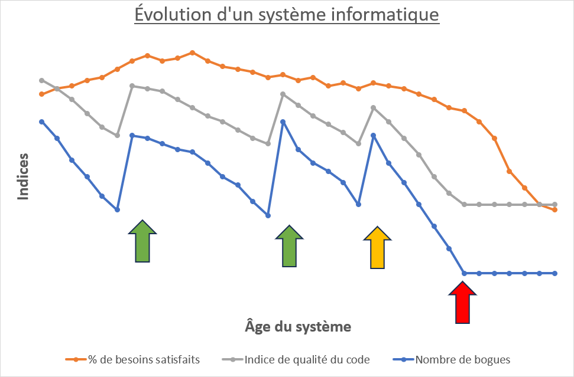
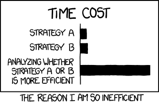

Maintenance , évolution et réusinage du code
Contenus de la section
3-8 Étapes de développement d'un projet
Temps requis
30 minutes


L'étape de maintenance et évolution est généralement la plus longue étape de la vie du système. Il s'agit d'un simple calcul de rentabilité du développement. Le développement génère un fort volume de dépenses qui doivent être couvertes par la vente, durant une période de temps étendue, pour rentabiliser le développement. La maintenance permet de garder le système sécuritaire tout en corrigeant des bogues, alors que l'évolution conserve la pertinence du système intègre de nouvelles fonctionnalités afin de tirer profit des environnements changeants.
Modèle de distribution
Avec la distribution en ligne, l'accès aux mises à jour est très facile et à faible coût pour les compagnies. Aussi, afin de maintenir la capacité financière de la compagnie de supporter un système longtemps, les modèles d'affaires sous forme de contrat de service, bien présent dans les licences commerciales depuis longtemps, sont de plus en plus présents dans les licences pour les usages personnels.
Les principales activités de la phase de maintenance et d'évolution sont :
- Correction de bogues :
- Les bogues de faible impact sous la forme de correctif (hotfix);
- Les bogues de haut impact sous la forme de nouvelles versions mineures;
- Introduction de nouvelles fonctionnalités afin de maintenir l'avantage concurrentiel du système :
- Les fonctionnalités ayant une portée limitée sous la forme de nouvelles versions mineures;
- Les fonctionnalités ayant une grande portée qui brise la rétrocompatibilité sous la forme de nouvelles versions majeures.
Un essentiel d'un déploiement dans la phase d'évolution
Aucun changement, même sans rétrocompatibilité, ne doit entraîner des pertes de données. Si la perte de données est inévitable (fin du soutien d'une technologie par exemple), il doit y avoir une possibilité de transférer les données vers la nouvelle infrastructure. De plus, en cas de problème dans la migration, il doit être possible de recommencer.
Pour ce faire, un tel changement doit être annoncé longtemps d'avance (on parle de plusieurs mois, voire plus d'un an). Par exemple, Microsoft a annoncé la fin du soutien de Windows 10 (14 octobre 2025) aussi tôt que le 14 juin 2021 (Radio-Canada, 2021).
La qualité du logiciel après son déploiement
Après le déploiement, la qualité du logiciel se dégrade lentement au fil des mises à jour. Ce qui à la conception initiale pouvait être traité de façon harmonieuse, avec une vue d'ensemble, l'est plus difficilement. Également, chaque changement arrive à la pièce et certains choix peuvent être en contradiction avec des choix préalablement faits. Ces événements causent à long terme une dégradation lente, mais présente de la qualité du code.
Lorsque la qualité du code devient trop dégradée, le coût des modifications (et des correctifs) se met à augmenter, au point où il est plus avantageux de réusiner (refactoring) le code : réécrire des parties du code, sans changer les fonctionnalités offertes. Ce sont des opérations de développement qui n'ont pas de bénéfice immédiat sur le produit, mais qui réduisent les coûts futurs en plus d'augmenter les possibilités d'évolution.


Réusinage de code (refactoring)
Le réusinage de code est un « processus qui réorganise le code pour simplifier sa structure, réduire sa complexité ou le rendre plus intelligible » (traduit de Sommerville, 2016).Dans un réusinage, on recherche principalement des endroits ou des conceptions problématiques appelées « mauvaises odeurs » (bad smells). Plusieurs sont détaillées sur Refactoring Guru.
Duplication du code- Une duplication de code survient lorsque les mêmes instructions apparaissent à plusieurs endroits dans le code. Pour régler ce problème, le code dupliqué est rassemblé dans une méthode et cette méthode est appelée lorsque nécessaire.
Méthodes longues- Les méthodes longues ont beaucoup de lignes de code (plus d'une dizaine) ce qui contribue à augmenter les dépendances, à « régidifier » le code et diminuer sa lisibilité. Pour régler ce problème, il faut déléguer des traitements à d'autres méthodes.
Instruction switch-case- Une instruction switch-case représente une succession d'instructions conditionnelles. Si j'insère une instruction
switch-caseavec 3 branchements, c'est équivalent à avoir 3 conditions dans mon code. Cette instruction masque la longueur réelle de la méthode. Pour régler ce problème, l'utilisation du polymorphisme est souvent avisée, avec des mécanismes comme le patron stratégie ou l'objet nul. Longue liste de paramètres- Une méthode qui accepte plus de 3 ou 4 paramètres accomplit trop de manipulation sur les données ou utilise un algorithme trop complexe. Pour régler ce problème, il est possible de modifier les paramètres pour y inclure des méthodes ou des objets qui encapsulent les informations (et leur déléguer une partie des traitements) ou d'introduire un paramètre générique.
Tas de données (*data clump*)- La réplication de plusieurs groupes de variables dans le code, ce qui arrive en cas de copier-coller ou de manque d'organisation. Pour régler ce problème, ces groupes de variables devraient être rassemblés dans leur propre classe.
Généralité spéculative- Lorsque le principe YAGNI n'est pas respecté, il arrive que des interfaces et d'autres mécanismes existent pour rendre un code modulaire qui n'aura pas besoin de l'être. Cela augmente la complexité du code. Pour régler le problème, on retire les mécanismes d'extensions qui ne sont pas utilisés.
Changement divergeant- Certaines classes sont difficiles à faire évoluer, car modifier leur comportement demande la modification de plusieurs méthodes. La cause de cette mauvaise odeur peut être le copier-coller de code. Pour régler ce problème, on peut scinder la classe pour rendre moins interdépendantes les différentes méthodes.
Chirurgie au *shotgun*- Certaines fonctionnalités sont difficiles à introduire ou faire évoluer, car les modifier implique des petits changements à beaucoup de classes. La cause de cette mauvaise odeur peut être l'utilisation de généralité spéculative, ou une trop grande application du
changement divergeant. Pour régler ce problème, on rassemble les parties impactées par les changements dans une même classe (au besoin, on ajoute une nouvelle classe). Jalousie de fonctionnalités- Certaines classes accèdent davantage de données provenant d'une autre classe que de leurs propres données. Cela se produit lorsque des attributs sont transférés de classe, mais pas les méthodes qui les manipulent. Pour régler ce problème, il faut déplacer les méthodes ou les parties des méthodes qui accèdent plus souvent aux données d'un autre type qu'à leurs données.
Intimité inappropriée- Mauvaise odeur qui survient lorsque le code d'une classe accède et modifie les champs ou méthodes internes d'une autre classe. Les classes ne devraient pas partager ou permettre que l'on accède à des données et des traitements internes. Pour résoudre le problème, on peut déplacer les méthodes ou les attributs entre les classes. Si ce n'est pas possible, on peut aussi ajouter une classe qui regroupe les sections partagées ou transformer une relation bidirectionnelle en unidirectionnelle.
Choisir si l'on fait le changement ou non
Il faut évidemment que la modification apporte plus d'avantages au système qu'elle ne coûte. Les facteurs suivants sont à considérer pour décider s'il est opportun d'apporter, ou non, une modification :
- Dégradation prévue du système et coûts si la modification n'est pas faite;
- Nécessité de la modification;
- Coûts immédiats et dans le futur d'apporter la modification;
- Nombre de personnes utilisatrices affectées;
- Coût de renonciation (ce qu'on ne peut pas faire parce qu'on assigne nos ressources à ce changement);
- Étape et position situationnelle dans le cycle de production global.
Il faut aussi que cette évaluation soit proportionnelle au changement qui est apporté.


Mort logicielle
Plus la qualité d'un logiciel se dégrade, plus il devient coûteux à maintenir. La question se pose donc : doit-on remplacer le système ? Pour répondre à cette question, il faut se positionner entre la qualité du système et la valeur utilitaire de celui-ci pour l'entreprise.
| Valeur utilitaire faible | Valeur utilitaire élevée | |
|---|---|---|
| Système de faible qualité | Se départir du système, car il coûte cher et apporte peu. | Améliorer ou remplacer le système, car il coûte cher, mais il est utile. |
| Système de haute qualité | Maintenir tant qu'il continue de coûter peu et d'apporter beaucoup. | Continuer d'opérer et effectuer la maintenance normale (ne pas laisser se dégrader). |
Déterminer la valeur utilitaire d'un système demande aussi de répondre à de nombreuses questions. Voici quelques questions qui peuvent aider à déterminer la valeur utilitaire d'un système.
- Est-ce que le système est utilisé fréquemment ? Si oui, alors il a une haute valeur utilitaire. Attention, certains systèmes importants ont une haute valeur utilitaire même s'ils sont rarement utilisés.
- Est-ce qu'il s'adapte aux processus de l'entreprise ? Si l'entreprise ne peut pas changer ses processus à cause du système, alors la valeur utilitaire du système est basse, car il empêche la mise à jour des autres processus.
- Est-ce que d'autres systèmes en dépendent ? Si plusieurs systèmes reposent sur le système analysé, sa valeur utilitaire dépend aussi des systèmes qu'il supporte.
- Est-ce que les extrants ont une haute valeur utilitaire ? On peut se poser les 3 questions précédentes en remplaçant le système par le produit du système. Un système qui produit des données à haute valeur utilitaire aura lui-même une haute valeur utilitaire.

Références
Code Smells. Refactoring Guru. (s.d.). https://refactoring.guru/fr/refactoring/smells
Dependency. XKCD. (2020, 17 août). https://xkcd.com/2347/
Efficeny. XKCD. (2014, 10 novembre). https://xkcd.com/1445/
Radio-Canada. (2021, 14 juin). La Fin du Soutien de Windows 10 Annoncée en 2025. https://ici.radio-canada.ca/nouvelle/1801414/microsoft-windows-10-11-octobre-2025-fin-support-mise-a-jour
Software Updates. XKCD. (2019, 4 novembre). https://xkcd.com/2224/
Sommerville, I. (2016). Software engineering. Pearson.